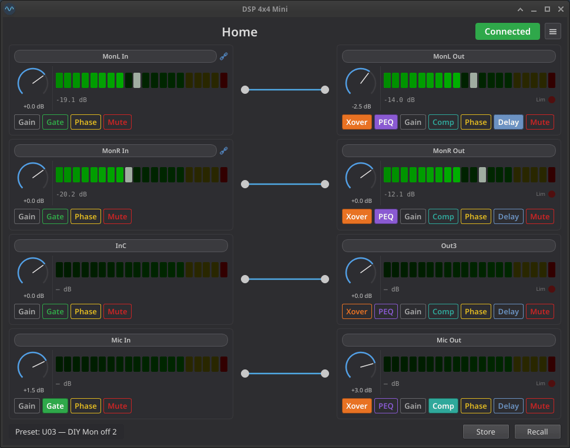

miniDSP-Linux-qt¶
Status: Work in progress — see Features for completed features
📖 New here? Read the User Guide — a full walkthrough of every panel, dialog, and workflow.
🛠 Contributing or building from source? See the Development Guide.
A full-featured Qt graphical interface for the t.racks DSP 4x4 Mini audio processor, built on top of the miniDSP-Linux protocol library. Covers the complete DSP signal chain — gain, routing, noise gate, parametric EQ, crossover, compressor, delay — plus preset management, channel linking, a test tone generator, device lock / PIN, light/dark theming, and an offline mode for editing without hardware.
Home View¶

See UI Concepts for original design mockups.
Installation¶
AppImage (recommended)¶
Download the latest minidspqt-<version>-x86_64.AppImage from the Releases page — a single executable that bundles its own CPython and PySide6 (no Python or virtualenv needed on your machine):
chmod +x minidspqt-*-x86_64.AppImage
./minidspqt-*-x86_64.AppImage # connected mode
./minidspqt-*-x86_64.AppImage --offline # virtual DSP, no hardware
pip (release wheel)¶
Prefer a normal Python install? Grab the wheel from the same Releases page and install it into a virtual environment (requires Python 3.11+):
python3 -m venv .venv
source .venv/bin/activate
pip install "https://github.com/IMBArator/miniDSP-Linux-qt/releases/download/vX.Y.Z/minidsp_linux_qt-X.Y.Z-py3-none-any.whl"
minidspqt # or: minidspqt --offline
Both install paths talk to the device over /dev/hidraw*, so non-root use needs the udev rule under Permissions.
Usage¶
Connected mode¶
minidspqt # connect to hardware (WARNING level)
minidspqt -v # info-level logging (recall tracing, config reads)
minidspqt -vv # debug-level logging (USB frame traces)
Offline mode¶
.unt files¶
Use the menu button (top-right) to load or save .unt preset files. In offline mode, all 30 slots are editable and can be saved back to disk.
Permissions¶
The tool communicates via /dev/hidraw*. By default this requires root. To allow regular users, create a udev rule:
sudo tee /etc/udev/rules.d/99-dspmini.rules << 'EOF'
SUBSYSTEM=="hidraw", ATTRS{idVendor}=="0168", ATTRS{idProduct}=="0821", MODE="0666"
EOF
sudo udevadm control --reload-rules && sudo udevadm trigger
Then reconnect the device.
Features¶
Home view¶
- Per-channel gain knobs (−60 to +12 dB) for 4 inputs and 4 outputs (
cmd_gain) - Mute and phase invert toggles per channel (
cmd_mute,cmd_phase) - Routing matrix — interactive 4×4 input-to-output mapping (drag to connect, double-click to disconnect) (
cmd_matrix_route) - dB-scaled level meters for all 8 channels (
cmd_poll,parse_levels) - Outlined toggle buttons — each feature button (gate / mute / phase / xover / peq / comp / delay) paints its accent color on the border and text when off, and fills with the same accent when on
- Startup config read — knobs and toggles reflect device state on connect (
cmd_read_config,parse_config_page) - Auto-reconnect on USB disconnect
- Channel names — click any channel label to rename (max 8 characters), sent to the device immediately (
cmd_set_channel_name) - Limiter indicator — red LED on output strips lights up when the compressor is actively limiting (
parse_levelsresponse field)
Light / dark theme¶
- Follows the system color scheme automatically (Qt 6.5+
QStyleHints.colorSchemeChanged); switches live when the OS appearance changes - Manual override via Menu → Theme (System / Light / Dark), persisted across sessions via
QSettings - Custom-painted widgets (PEQ / crossover / gate graphs, level meter, knobs, routing matrix, limiter LED) are theme-aware: graph backgrounds use a soft tinted off-white in light mode rather than pure white
Channel linking¶
- Linked channel display — master and slave strips show a chain icon; slave controls are disabled with a tooltip indicating the master (
decode_link_groups) - Editable from Menu → Channel linking… — a popup with two triangular radio-button matrices (inputs / outputs) where each row picks the channel it is linked to (or its own diagonal for standalone) (
cmd_prepare_link,cmd_channel_link) - The lowest-indexed channel in each group automatically becomes the master, matching the device's master = OR-bitmask / slave = 0x00 wire convention
- Forbidden configurations are greyed out: a slave can't itself be picked as a target (no chains), and a master with active slaves can't be demoted before they are released
- Headers, row labels, and the live "InA: master of …" / "InB: linked to InA" status text use the user's custom channel names from the home view
- Apply sends
OP_PREPARE_LINK(0x2A) for every new pair followed byOP_LINK(0x3B) for each affected channel, then re-reads the device config so the dialog reflects whatever the device actually committed; offline mode uses the same code path against the in-memory virtual DSP
Copy channel settings¶
- Accessible from Menu → Copy channel settings…
- Select a source channel from all 8 channels (InA–InD, Out1–Out4)
- Choose which parameter groups to copy (Name, Gain, Mute, Phase, Gate for inputs; plus Routing, Crossover, PEQ, Compressor, Delay for outputs)
- Target channels update automatically to the same type as the source; exclude the source itself
- Linked slave targets are restricted to Name-only with a warning banner
- Parameters are sent as raw protocol values and a config reload refreshes the UI
Channel detail view¶
Click the Gate button on any input strip — or the PEQ / Xover / Comp button on any output strip — to open the per-channel detail view:
- Header with the same channel strip from the home view (gain knob, level meter, mute/phase/gate or mute/phase/peq/… toggles, name)
- Quick navigation buttons for all 4 inputs and 4 outputs; the active feature is preserved across channel switches when valid for the new channel type
- A feature panel area:
- Gate (inputs) — Threshold, Attack, Hold, Release knobs plus a live transfer-function graph; all four parameters are sent atomically (
cmd_gate) - PEQ (outputs) — 7 bands of (Type / Freq / Gain / Q / Bypass) below a summed frequency-response graph, plus a channel-bypass toggle in the panel header. Per-band atomic emit. Shelves and pass filters cap Q at 3.0 to match the official editor; Peak and the two allpass forms keep the full Q range (
cmd_peq_band,cmd_peq_channel_bypass) - Crossover (outputs) — Hi-Pass and Lo-Pass rows, each with frequency knob, slope selector (BW 6 / BL 6 / BW 12 / BL 12 / LR 12 / BW 18 / BL 18 / BW 24 / BL 24 / LR 24), and bypass toggle. Bypass is independent of the slope selector (matching the manufacturer software). Both the Xover and PEQ panels share a combined frequency-response graph that shows the summed crossover + PEQ curve (
cmd_hipass,cmd_lopass) - Compressor (outputs) — Threshold (−90 to +20 dB) and Knee (0 – 12 dB) knobs, a Ratio combo (16 named ratios from 1:1.0 to Limit), and Attack (1–999 ms) / Release (10–3000 ms) knobs. All five parameters are sent atomically and visualised on a live input-vs-output transfer-function graph that renders the soft/hard knee elbow and the Limit clamp (
cmd_compressor) - Delay (outputs) — Single edit knob (0 – 680 ms, 3-decimal ms display, typed input accepts
"12.5 ms"or"601 sa") targeting the displayed output, plus an overview bar graph showing every output's delay on a shared auto-scaling axis (snaps to the next 20 ms above the largest active delay; clamps at 680 ms). The graph re-targets to whichever output the strip nav buttons select, so a single panel covers all four outputs without per-channel duplication (cmd_delay) - A placeholder panel is shown when the active feature does not apply to the selected channel (e.g. Gate on an output)
- A Reset button in the header of every feature panel (Gate / PEQ / Crossover / Compressor / Delay) snaps just that feature on the displayed channel — plus any linked slaves — back to the F00 factory defaults after a confirmation dialog (
load_factory_defaults) - Routed-channel level meters — outputs to the right of an input, inputs to the left of an output, driven by the routing matrix
- Strip-level "active" indicators: the input Gate button fills green when the gate threshold is above the noise floor; the output PEQ button fills purple when at least one band has non-zero gain and is not bypassed; the output Xover button fills amber when either hi-pass or lo-pass is not bypassed; the output Comp button fills teal when the ratio is anything other than 1:1.0; the output Delay button fills light blue when the delay is non-zero
- Master → slave parameter fan-out: editing any compressor / delay (or gate / PEQ / crossover) parameter on a master channel mirrors the change to every linked slave in both the on-screen model and the device requests (internal logic using
decode_link_groups) - EQ curve visualisation — QPainter log-frequency/dB graphs driven by local biquad coefficient math (Audio EQ Cookbook / RBJ), shared between PEQ and Crossover panels; crossover markers (triangles) and PEQ band markers (numbered circles) overlay the summed magnitude response
Preset management¶
- Recall any of the 30 user presets (U01–U30) or the factory preset (F00) (
cmd_load_preset,cmd_read_config,parse_preset_params) - Store current settings to any user slot with a custom name (
cmd_store_preset_name,cmd_store_preset) - Confirmation dialog before writing to device flash
- Preset name label updates in real time (
cmd_read_name,parse_preset_name)
Offline mode¶
- Enter at launch with
--offline, or switch at runtime via Menu → Connection mode → Offline - In-RAM virtual DSP — no hardware required
- Edit gains, mutes, phases, routing, PEQ, crossovers, compressors, delays
- Load and save .unt files — round-trip with the manufacturer file format
- Online → Offline carries the live device state into the virtual DSP so you keep editing what was on the device
- Offline → Online prompts before discarding offline edits (save your
.untfirst to keep them) - Cold-launching offline (no live config seen yet) seeds from the bundled
blank.unttemplate
.unt file support¶
- Load manufacturer .unt files — parses all 30 preset slots
- Save .unt files with byte-identical round-trip for untouched data
- Preserves unknown bytes when editing individual fields
Test tone generator¶
- Accessible from Menu → Test tone… — non-modal dialog with Off / Pink / White / Sine radios (
cmd_test_tone) - 31-step ISO 1/3-octave sine frequency selector (20 Hz – 20 kHz)
- Full-width red Disable test tone panic button for instant silence
- Generator keeps running after closing the dialog; state survives power cycles (
parse_preset_paramstest tone fields)
Device lock / PIN¶
- Auto-prompt on connect — when the device reports it is locked (
cmd_device_infobyte 6 =0x01) the worker pauses config load and pops a modal Unlock device dialog. Up to three PIN attempts; wrong PIN shows inlineN attempts remaining; cancel or exhaustion disconnects without auto-reconnecting so the user is not stuck in an unlock-prompt loop (cmd_submit_pin) - Set a new PIN from Menu → Set device PIN… with a confirm field; on ACK the application closes the USB session and stops the worker (set-PIN is a one-shot admin action, not a normal edit) (
cmd_set_lock_pin) - Reconnect menu entry re-arms the worker after any user-initiated disconnect (cancel, three wrong PINs, or set-PIN ACK)
- PINs are 4 raw bytes — any 4 printable ASCII characters work, not just digits, regardless of the upstream library docstring
- No "Remove PIN" action is exposed because the protocol has no such command; offline mode mirrors the same semantics against the in-memory virtual DSP for safe experimentation
- See Device Lock / PIN in the user guide for the full UX walkthrough and the ⚠ no known factory reset warning
Knob interaction¶
- Click and drag vertically, scroll wheel, or arrow keys for ±1 raw unit steps
- Ctrl + scroll / drag / arrows for range-adaptive fast editing (~2 % of range per step)
- Click the dB label to type an exact value via keyboard
- Double-click on any knob to reset to its default value (emits
valueChangedsignal)
Roadmap¶
Comparison against the miniDSP-Linux protocol library. See Features for completed functionality.
| Feature | Library API | What's missing |
|---|---|---|
| Refactor linking indicator: right from header pill with text | — | — |
| Detail View: mark with underline the currently edited feature | — | — |
| Delay display unit (ms/m/ft) | cmd_set_delay_unit |
Dropdown in delay view |
| Firmware string display | cmd_firmware response |
Surface in About dialog |
| Show-all-EQ overlay | — | Checkbox to overlay 4 output curves |
| PEQ extras | — | draggable graph markers |
Needed?¶
| Feature | Library API | What's missing |
|---|---|---|
| PEQ extras | — | Copy-band / paste-band, A/B compare |
Related projects¶
- miniDSP-Linux — Protocol library and CLI tool this project depends on
- dsp-408-ui — Same Musicrown protocol over TCP for the DSP 408
Acknowledgments¶
- PySide6 — GUI framework (Qt for Python, licensed under LGPLv3/GPLv3)
- miniDSP-Linux — Protocol library and CLI tool this project depends on
This application uses the PySide6 Qt binding. PySide6 is licensed under the GNU Lesser General Public License v3. Users have the right to obtain, modify, and redistribute the Qt/PySide6 library source code. The library is dynamically linked; users can replace the PySide6 version at runtime without modifying this application.
License¶
This project is licensed under the GNU General Public License v3.0.
Not affiliated with Musicrown, the t.racks, or Thomann. Protocol reverse-engineered for interoperability purposes under applicable law.